Lead white
In the ground, with barite, and throughout the paint.

 CaillebotteParis Street; Rainy Day · 1877All 15
CaillebotteParis Street; Rainy Day · 1877All 15A studio guide · Paris, 1877
Imagine you are Gustave Caillebotte, twenty-eight and rich, helping to stage the Impressionists' third exhibition, with a crossroads near your home to paint nearly three metres wide. This guide follows what your process would have been, from a pencil sketch made at the corner to pins pushed into the canvas at the vanishing points, and the figures you added last.
The Art Institute of Chicago studied the painting when it was cleaned in 2013–14: the pinholes, the ruled underdrawing and many late changes come from that study. The perspective drawing and an oil sketch survive. The order of the middle stages is inferred. Each chapter opens with a note on what its evidence is. The slider steps through seven stages; stages 1 to 6 are reconstructions.
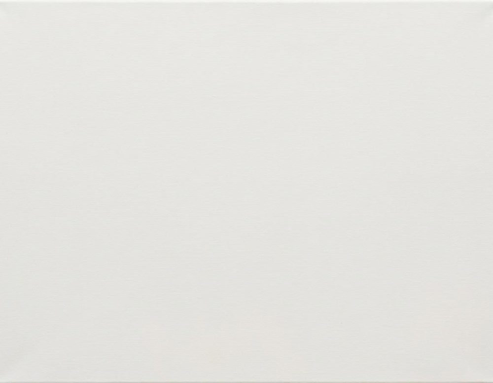
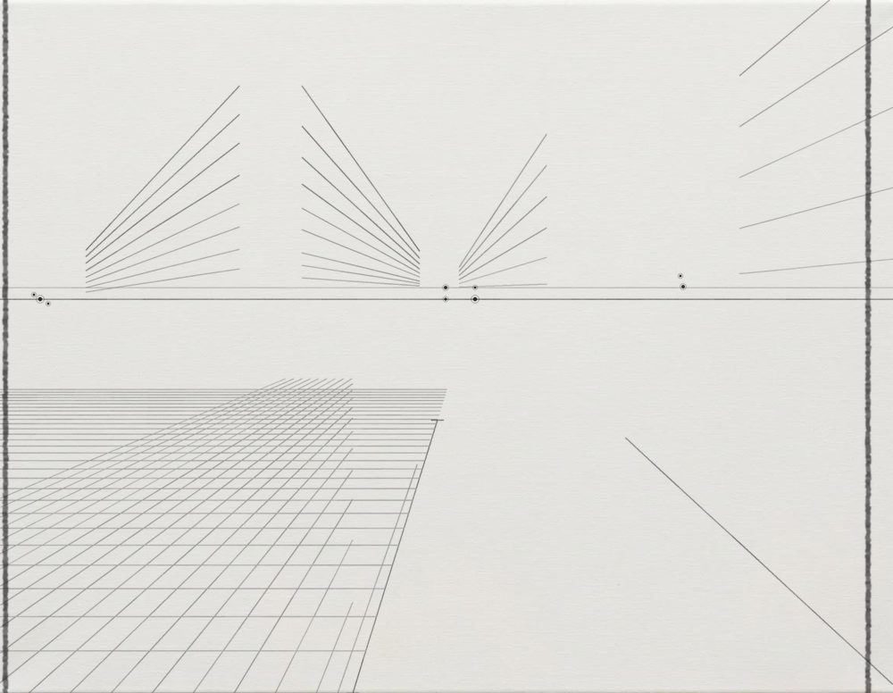
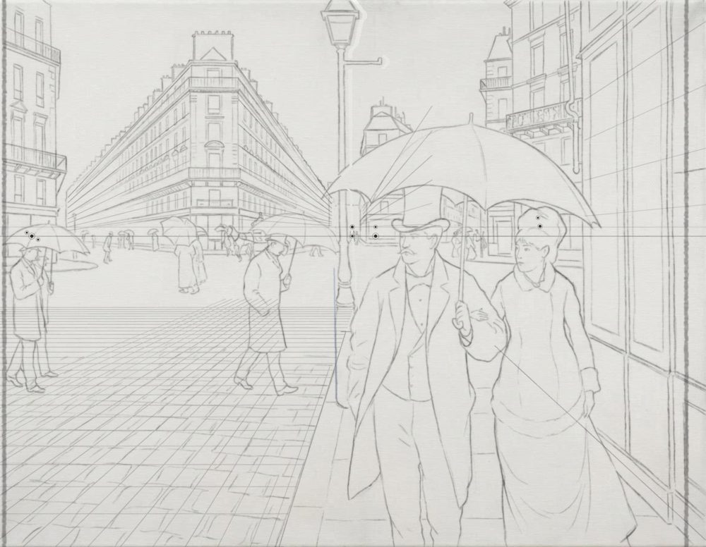
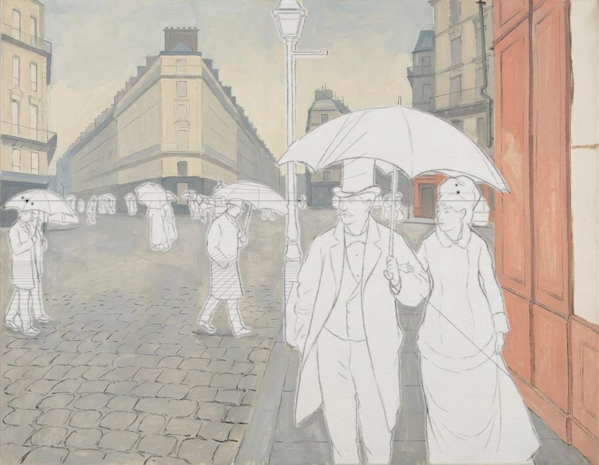
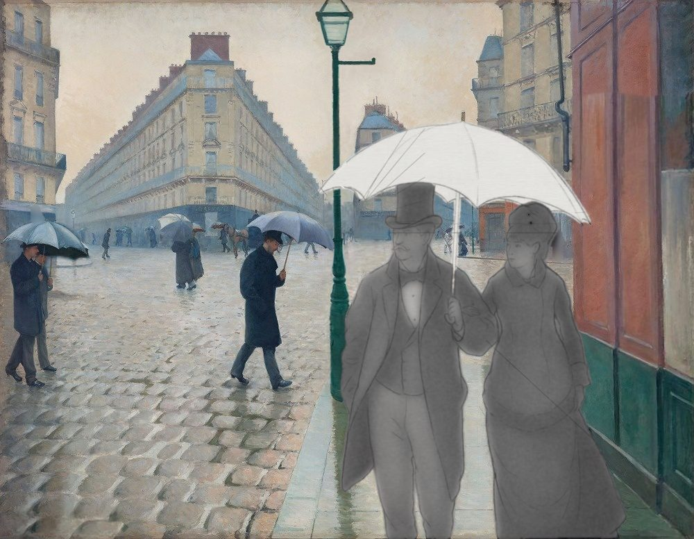
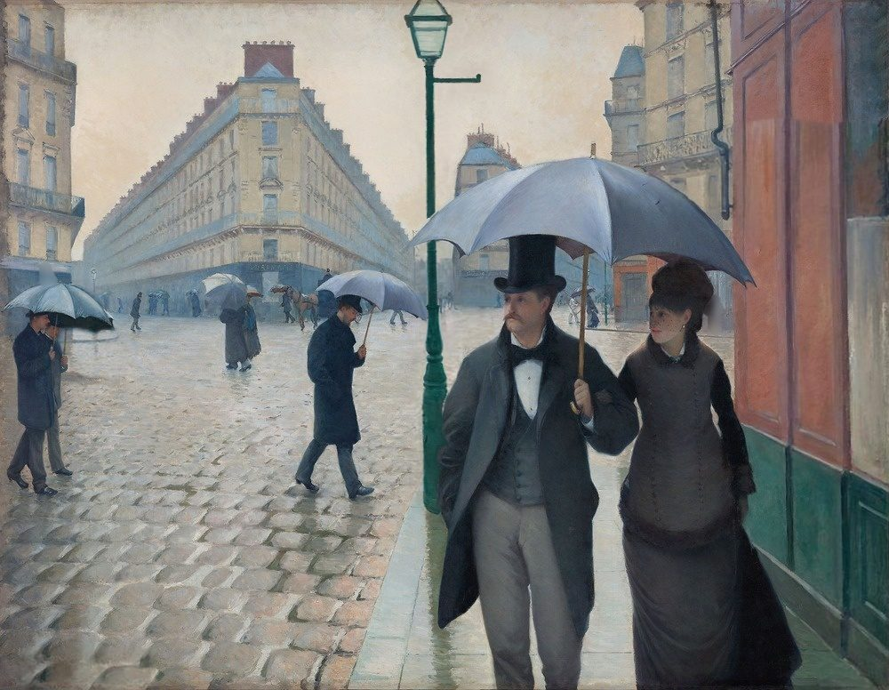
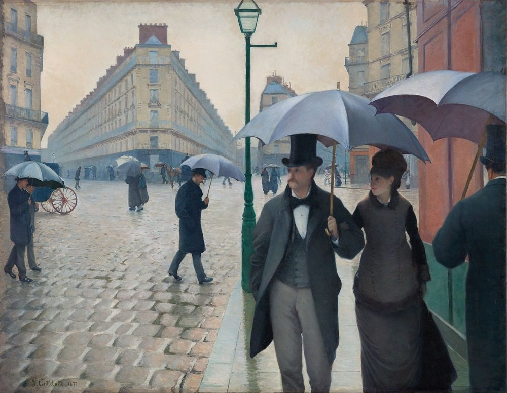
Late additions
Stage 7 of 7The man at the right edge, the two women, the carriage and a small figure added; the lamp post straightened; a warmer tone in the sky; signed. This is the painting today.
EvidenceBerhaut's catalogues raisonnés (1978 and 1994), which cite the École's register and the family's property records, and the Getty's 2025 exhibition texts.
You are Gustave Caillebotte, born in Paris in 1848. Your father made a fortune supplying beds to the army, sat as a judge of the commercial court, and built the family a house at 77 rue de Miromesnil with an artist's studio under the roof. Summers are spent at the family estate at Yerres.
You took a law degree in 1870 and served in the Garde mobile in the war with Prussia. Soon after, you entered the studio of the painter Léon Bonnat, and in March 1873 you passed the entrance examination of the École des Beaux-Arts, 46th on the list. The École's records show no competitions entered: you hardly attended.
Your father died at Christmas 1874 and left you rich. In 1875 the Salon jury refused your Floor Scrapers, and in 1876 you showed it with the Impressionists instead. That November your brother René died. Two days later you wrote a will leaving your collection of your friends' paintings to the State, and money for an Impressionist exhibition in 1878.
EvidenceThe Art Institute's 2015 catalogue entry, Berhaut, 1877 reviews that name the streets, and the city of Paris on the history of the quarter. Your exact viewpoint is a reconstruction.
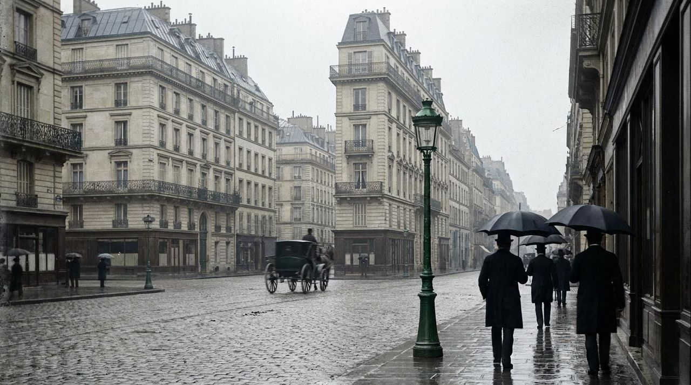
Ten minutes' walk from your house, in the quartier de l'Europe, where the streets are named after European cities, the rues de Turin, de Moscou and de Saint-Pétersbourg cross in an open, shapeless space, and the rue Clapeyron sets off from it. It is known as the carrefour de la rue de Moscou; it became the place de Dublin only in 1987. Private developers laid the quarter out from 1826, and its last buildings were still going up in your youth, as the rue de Turin was extended and the rue Clapeyron cut through.
You pass it on your way to the cafés. Stand on the pavement of the rue de Turin, near the curb, and look across: the rue de Moscou goes off to the left, the rue Clapeyron straight ahead behind a lamp post, and between them rises a new wedge of apartments with a pharmacy at its point.
In 1876 you painted the Pont de l'Europe, a few hundred metres away, over the tracks into the Gare Saint-Lazare. Before settling on this crossing you had also drawn one at the rue de Madrid, and dropped it.
EvidenceThe Art Institute's technical reports on the drawing (Antoinette Owen) and the painting (Kelly Keegan), 2015. The camera lucida is the museum's inference: no document shows that you used one.
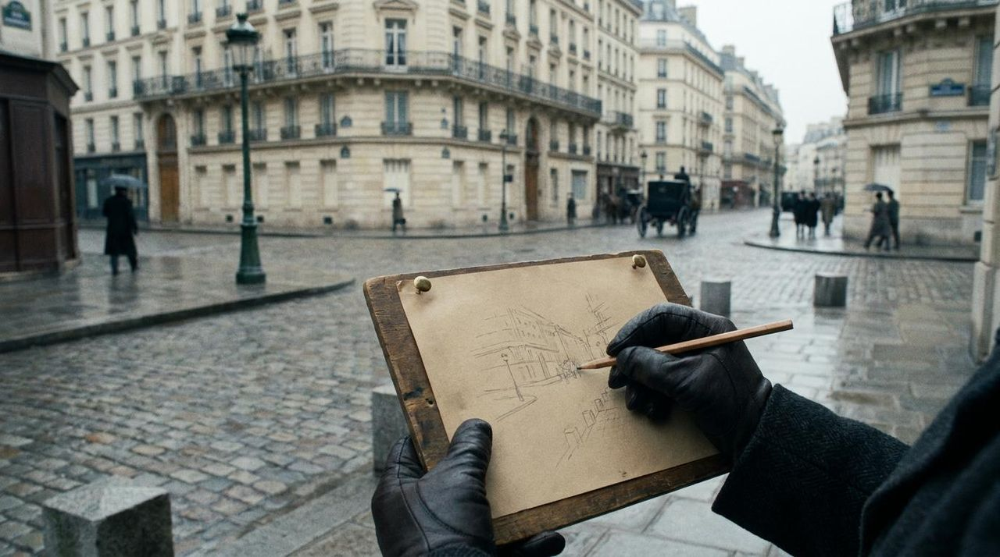
Make the first drawing at the corner itself, in soft pencil on half a sheet of tan laid paper. Put in the buildings and the lamp post; mark where the passers-by will go with zigzags, and the couple with a single oversized umbrella.
Back in the studio, go over it with a harder pencil, a straightedge and a compass. Rule a faint horizon and the façades, mark the vanishing points, centre the lamp post, draw the edges of the picture, then lower the top edge in charcoal.
Then measure. Fifty-seven tiny pricks from the points of calipers or a proportional compass sit on the horizon, on the lamp post's axis and on three of the vanishing points. Multiplied by about seven, their spacings match the painting.
Did you draw it through an optical device? In 2015 the artist and researcher Pablo Garcia stood at the corner with a camera lucida, a prism on a stand that lets you trace what you see, and found the drawing lines up with its view from about 127 centimetres above the pavement, chest height for a man of 1.67 metres like you. The Art Institute finds the case compelling, but no document confirms it.
EvidenceBerhaut's catalogue raisonné, the Musée Marmottan Monet, the Art Institute's catalogue and the list of a 2019 exhibition in Berlin. The figure drawings are privately owned and not shown here.
Draw the people separately, each on a sheet about 47 by 31 centimetres, mostly without the setting: the couple under one umbrella, a man stepping onto the pavement, two men sharing an umbrella, a woman seen from behind. You draw a man lighting a pipe too, and leave him out.
Some of these sheets are squared, according to the list of a 2019 exhibition in Berlin: a grid lets you copy a figure larger, square by square. No grid has been found on the canvas itself, so how the figures reached it is not known.
Then try it in colour. An oil sketch less than a quarter of the final width fixes the buildings, the figures and the grey light, and you keep going back to it while you paint the big canvas, as a testing ground. The two women by the lamp post are not in it. A second oil study tries out the rain on the stones.
You later give the sketch to Monet, who keeps it in his bedroom at Giverny until his death.
Figure studies, all in private collections
After Berhaut (1994) and the Art Institute (2015). One sheet is a promised gift to the Frick Collection, New York.
EvidenceKelly Keegan's technical report (Art Institute, 2015): cross-sections, XRF and SEM/EDX on selected samples. The binding medium was not analysed.
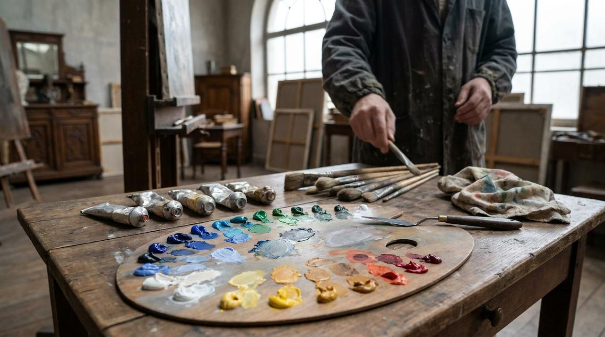
Your canvas is not a standard size. Buy a length of linen already primed by a colour merchant, off-white, a single thick coat of lead white with barite; the width of the roll, about 2.1 metres, sets the height of your picture. No merchant's stamp survives.
Tack it to a wall rather than stretch it: the examination suggests you painted at least part of it unstretched. The family house has an artist's studio under the roof; whether you painted this canvas there is not recorded.
The analysis found the pigments below, in the samples taken; others may be present.
In the ground, with barite, and throughout the paint.
A second white.
Also in the signature.
A second blue.
A variety containing magnesium.
The copper green, identified by SEM/EDX.
The chromium green.
Found in the warmer tone you later brushed into the sky.
A pale, warm yellow.
Red and yellow earths. The signature is mostly an iron-oxide brown.
The bright red.
It glows under ultraviolet light: in the faces, the purple of the umbrellas, the background and some drawing lines.
EvidenceKeegan's technical report: infrared images show the pinholes, two horizon lines and the ruled underdrawing. Those images belong to the Art Institute and are not reproduced; the positions drawn here are approximate.
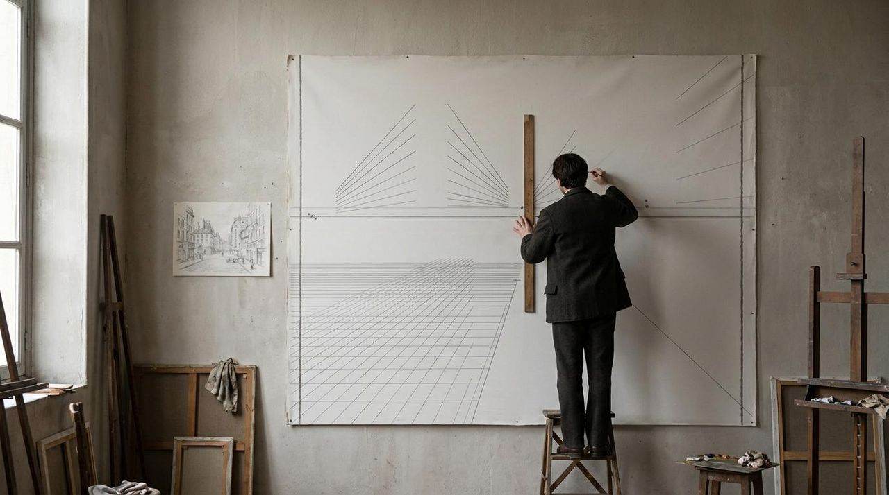
Two thick black painted lines at the sides of the composition, with the lamp post's place at the centre between them. You will move the right one at least twice.
A thin line of dark paint, almost perfectly straight, perhaps ruled against a string. An earlier one, with its own pins, sits about 3.5 centimetres higher.
Transfer them from the drawing with calipers, at about seven times its size, and push in pins: one just right of the lamp post for the façades of the rue Clapeyron, the main one where the heads of two women will go, three at the far left, one in the hair of the woman in front. Brace your straightedge against them.
Rule the façades and the rows of paving only where they will show, stopping short of the horizon. Then draw every building and figure in charcoal, black paint and fine lines of blue and red-lake paint, hanging the heads of the distant figures from the horizon.
Compared with the drawing, you add about 17 percent to the height at the bottom: the stones splay out towards you and the horizon sits at your eye level. In 2015 Pablo Garcia redid the transfer at full size, on a primed canvas tacked to a wall, to show how it could be done.
EvidenceKeegan's technical report: X-rays, infrared, ultraviolet and cross-sections show the reserves, the scraping and the changes. That the four figures came late is documented; the order of the other steps is inferred.
You paint largely inside your drawn lines, with round and flat brushes, strokes up to 1.5 centimetres wide, and a palette knife to scrape back what you want to change. The X-ray first suggests a carefully planned picture that hardly changed; closer study shows that you altered every building and every figure.
AI-generatedAfter step 4: late additions
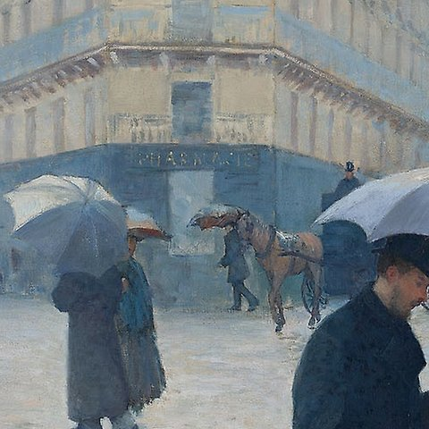
Lay in the sky, the façades and the street inside your drawn lines, leaving the figures as bare canvas. In the X-ray they stand in pale halos. Some small figures far off are kept in reserve; others you paint first and bring the background round them.
Outline each paving stone in dark paint. The left edge stays as you set it: the details of the far-left building stop at the black painted line, and a strip about five centimetres wide is left largely unpainted.
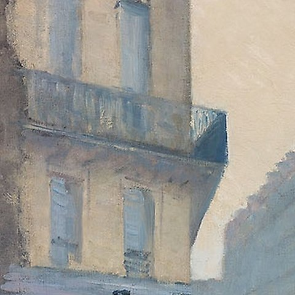
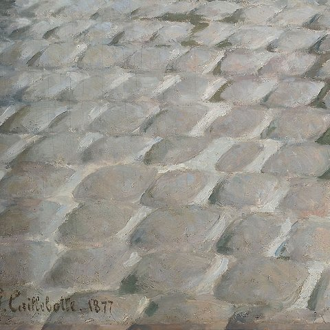
Work the paving wet into wet, more than once, until it is thick. Under the people crossing, dig into the wet paint with the back of the brush, for puddles and moving reflections.
Block in the couple with a thin layer of black inside their outlines, a start the report finds in some figures, and leave their umbrella bare for now.
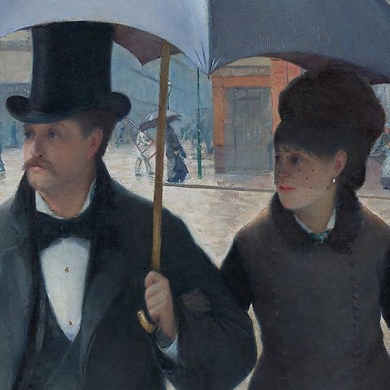
Paint the couple and keep changing them. At first both looked up, their heads turned further towards profile; you alter the folds, the collar, the length of his jacket and his hat. The woman has no gloves at first; you add them late.
Who they are is not known. A preparatory sketch carries the young woman's first name, Clotilde.
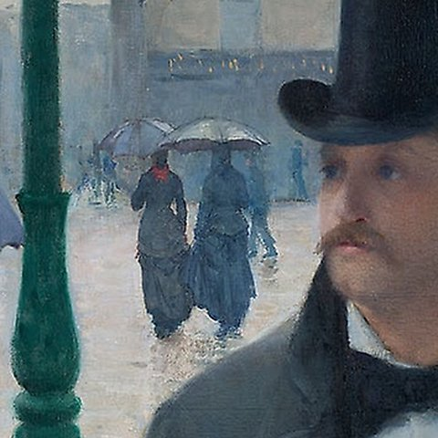
Now the biggest changes. Move the café building at the right further right, scrape much of it away, and paint over it a man seen from behind and cut by the frame. His umbrella's tip takes three tries. No drawing for him is known.
Scrape a patch by the lamp post and add two women walking away, their heads either side of your main vanishing point. Add the carriage and its driver at the far left, which you never finish: there is no horse. Add a small figure opening an umbrella.
Straighten the lamp post, which leaned a little to the left. Over the dry sky between the buildings, brush a warmer, slightly darker tone. Sign at lower left in grey-brown: G. Caillebotte. 1877.
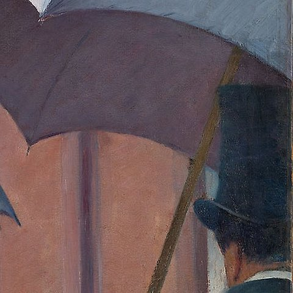
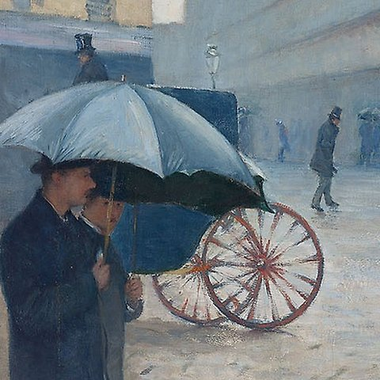
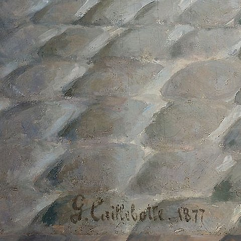
EvidenceLetters and memoirs collected by Berhaut and by the French Ministry of Culture; Rivière's and Bigot's accounts of the rooms; the 1877 reviews as printed by Berhaut and the Art Institute.
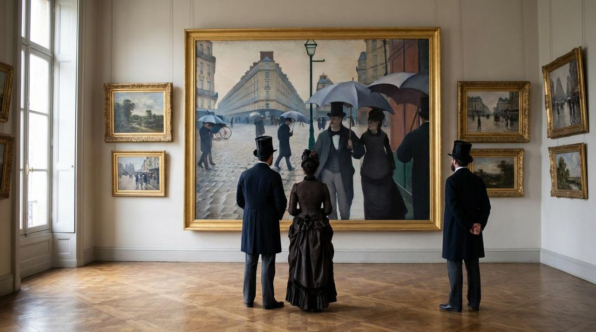
In January 1877 the gallery that housed the last show has been let to an upholsterer. “The exhibition will happen; it has to happen,” you write to Pissarro. With Renoir you rent an empty first-floor flat across the street, at 6 rue Le Peletier; Rivière thought you knew the owner. Each exhibitor guarantees 350 francs, and two or three of the richer ones, probably including you, advance the costs.
You hang the show with Renoir, Monet and Pissarro. It opens on 5 April: eighteen painters, 241 works in the catalogue, and the word impressionnistes on the shields over the door. Your six entries begin with this one, number 1, and Le Pont de l'Europe, number 2. You also lend paintings by Pissarro, Monet and Sisley from your own collection.
According to the critic Charles Bigot, your picture faces Renoir's Bal du moulin de la Galette from the next room, a painting that will later enter your collection.
At least 27 reviews mention it. Edmond Lepelletier calls it the most striking work in the show, with stones you could count and measure. Others complain that the rain is missing, that the umbrellas are all one silver, that the lamp post stands right in the middle and that the frame cuts a man in half. One calls you a millionaire who paints in his spare time.
EvidenceThe Art Institute's 2015 catalogue on the debate and on the 2013–14 treatment; Varnedoe and Galassi (1976); reviews of a 2011 exhibition of Martial Caillebotte's photographs; the museum's provenance record.
Since the 1970s people have asked whether you used photographs. In 1976 Kirk Varnedoe and Peter Galassi compared the picture's field of view to a wide-angle lens and suggested you might have traced your drawings from photographs. Others have found reasons to doubt it: a 3D model of the site gives an angle of view of 56 degrees, about a 38 mm lens, not wide-angle; the drawing's paper is too thick to trace through; and in 1877 a camera could not catch moving people and buildings sharply in one shot. The Art Institute now argues for a camera lucida, without a document to prove it. Your brother Martial's photographs, sometimes cited, were made from about 1891.
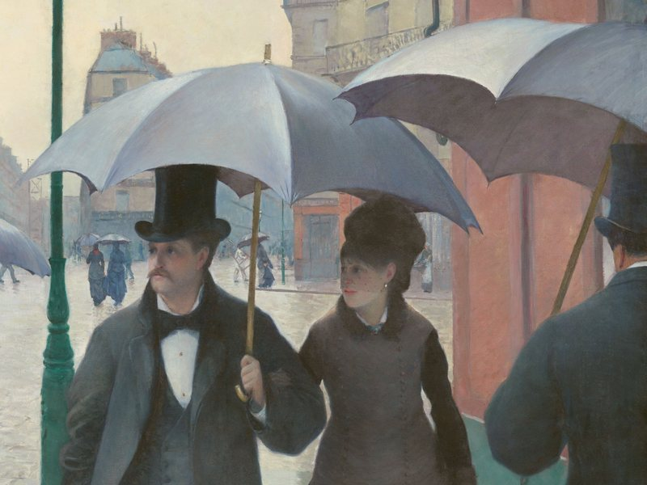
Before the 2013–14 cleaning: Google Art Project's photograph, online by December 2011.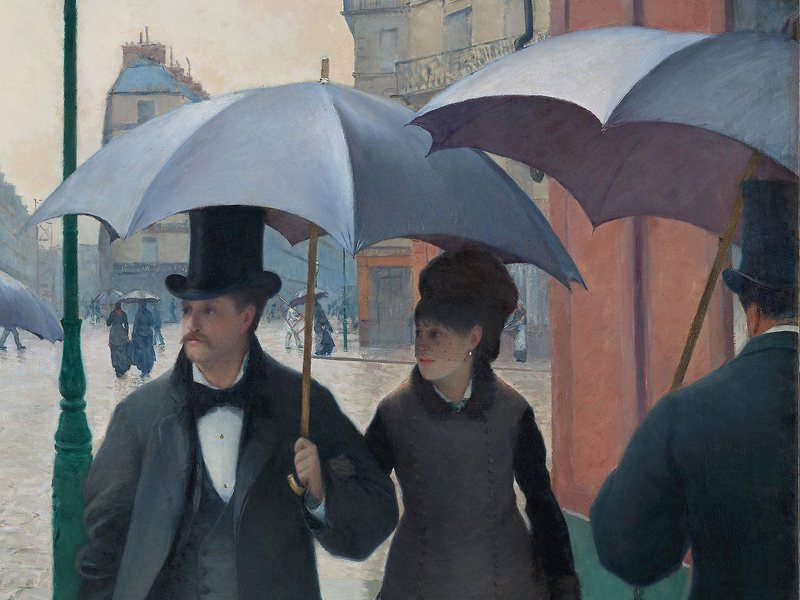
After: the Art Institute's photograph. Some of the difference is the photography.